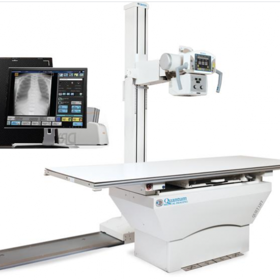

أولا الأشعة السينية:
– تساعد الأشعة السينية في تشخيص الإصابة ببعض الأمراض بطريقة غير مؤلمة وذلك بهدف تقييم الخيارات العلاجية
المتاحة
-يدعم الخطط العلاجية والجراحية ويسهلها.
-يساعد الطاقم الطبي خلال القسطرة أو إدخال أي جهاز طبي إلى الجسم.
ثانيا: السونار(الأشعة فوق الصوتية):
التصوير بالأشعة فوق الصوتية أو السونار عبارة عن تصوير يعتمد على موجات صوتية عالية التردد يمكنها التقاط صور حية
لداخل جسم الإنسان، وهي تقنية تشبه الرادار إلى حدٍّ ما، وهي طريقة تمكن الطبيب من تشخيص مشكلات الأعضاء المختلفة
من جسم الإنسان، والأوعية الدموية والأنسجة. ويتميز السونار بعدم استعمال أي نوع من الإشعاعات خلال التصوير، بعكس
جميع وسائل التصوير الطبي الأخرى، ومن هنا جاء تفرده بتصوير الجنين خلال الحمل.